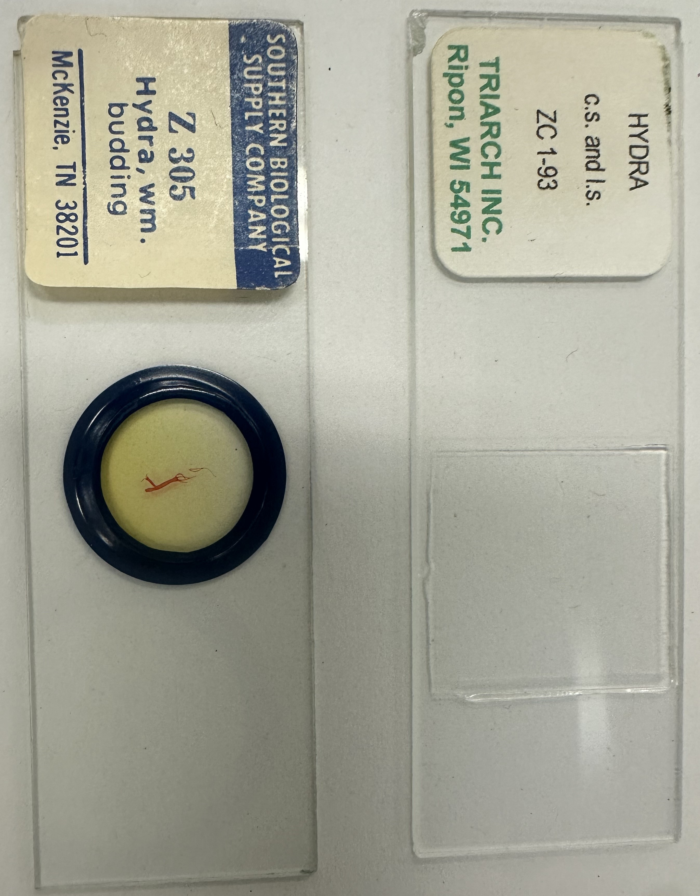

Use low-power measurement to calculate high-power estimates.
Goal
To demonstrate mastery in calculating high-power field diameters (HPD) at 10× and 40× using the
magnification ratio formula,
and in applying these values to accurately estimate specimen size, beginning with Hydra.
Metacognitive Reflection
How did you calculate the high-power field diameters (HPD) at 10× and 40× using the
magnification ratio formula?
(Explain your reasoning, not just the steps.)
How did you apply your HPD values to estimate the size of Hydra, and how confident are
you in your estimate?
Does your estimated size make biological sense?
If not, what would you recheck or revise?
Step 0: Technical Checks
Confirm these steps (by checking the box) before
getting the slide.
Step 1A: Retrieve the Ruler Slide
Step 1B: Seat the Ruler Properly
Step 1C: Align the Field & Measure
Two critical alignments
Left Align: Move the slide until a black millimeter line
sits exactly at the left edge of the circular field of view.
Diameter Align: Count the white millimeter widths across
the entire diameter of the field.
Use the 4X objective for this measurement. Round up to the nearest whole
number for memory, but record your actual reading first.
Step 1D: Replace the Ruler Slide
Return the ruler slide to its tray. You will now calculate the field diameters for higher
magnifications using the formula.
Need Help with Setup?
If you're having trouble with the microscope setup or measurements, ask your instructor for
assistance before proceeding to calculations.
Step 2: Calculating High Power Fields
Teaching Point: In this calculation, the 4x lens is your Low Power
(LP) baseline.
Both the 10x lens AND the 40x lens are considered High Power (HP) relative to
the 4x.
Part A: The 10x Objective
You measured the diameter for the 4x objective lens, now it is time to calculate the diameter for the
10x lens.
1. Build the Formula:
HPD =
× (
)
2. Enter your values and calculate:
Diameter (10x lens)=
× (
)
= mm
3. Enter your calculated result:
Part B: The 40x Objective
Using the same formula, calculate the diameter for the 40x lens.
1. The formula is the same:
HPD = LPD × (
LPMHPM
)
2. Enter your values and calculate:
Diameter (40x objective lens)=
× (
)
= mm
3. Enter your calculated result: Activity check - rotate the revolving nosepiece, observe the objective
lens colors and recite the field diameter for each objective lens while looking into the
microscope.
Step 3: The "Big Three"
You must memorize these three numbers. You will use them constantly in BIOS101.
4x
5mm
Scanning
10x
2mm
Low Power
40x
0.5mm
High Power
Space Repetition Check
Type the values to lock them in your memory. Try this: say the values out loud
before going to sleep later
Mini-Mastery: Reading Permanent Slide Labels

Sample permanent slides: Hydra wm. budding (whole mount) and Hydra c.s. and
l.s. (cross and longitudinal sections).
Permanent slide labels pack a lot of information into a few letters. Mastering these
abbreviations makes it much easier to know what you are looking at before you focus.
Core Abbreviations
w.m. – whole mount: the entire organism is
mounted on the slide (not sectioned).
Do not
confuse this with a wet mount, which is a temporary slide you
prepare yourself.
c.s. (or x.s.) –
cross section or transverse section: a slice
taken across the width of the specimen.
l.s. – longitudinal
section: a slice taken along the length of the specimen.
Check Your Understanding
Answer these from memory first, then glance back at the image and list above to confirm.
Bottom slide. The label reads "Hydra wm. budding".
In your own words, what does w.m. tell you about how this specimen was
prepared?
Top slide. The label reads "Hydra c.s. and l.s.".
What do c.s. and l.s. each stand for, and how are
those sections different?
You went to the side table and picked up a slide that reads: "Hydra x.s.".
Predict what you would expect to see when you first focus this slide at 4x magnification.
Your instructor asks you to retrieve a freshly prepared wet-mount slide of living Anabaena. Based on standard microscope slide abbreviations, which one would you expect to see?.
Mastery tip: When you pick up any permanent slide in this course, pause for three seconds,
read the abbreviations out loud, and picture the orientation of the specimen before placing
it on the stage.
Step 4: Estimate the Length of Hydra
Background: The lab manual notes that Hydra can extend to 25-30 mm when
hungry, but
specimens on slides are typically less than 2 mm in length.
Confirm these steps (by checking the box) before getting the slide.
Markings on the Hydra Slide
Your slide contains both a cross section (c.s.) and a longitudinal section (l.s.) mounts, located
side-by-side. You will use the l.s. (longitudinal section) to estimate
length.
Retrieve a permanently prepared slide on the side counter.
Obseve the markings on the slide. How many sections are present?
There should be two (2): a cross section (c.s.) and a longitudinal
section (l.s.).
Seat the Hydra slide on the microscope stage, then locate the
longitudinal section (l.s.) using the stage adjustment knobs. It is critical to center
the Hydra at 4X magnification, because doing so compensates for small alignment
errors in the microscope and greatly increases the chance that the specimen will stay in
view at higher magnifications.
Bring the longitudinal section (l.s.) into focus at 4X using
the course focus knob. Use the fine focus knob to sharpen the image. Adjust the illumination as
needed using the diaphragm lever.
The l.s. shows the full length of the body from base to tentacles. Identify these key anatomical
parts of the Hydra.
Calculate the total magnification: where; total magnification = ocular magnification × objective
magnification.
Carefully turn the revolving nosepiece clockwise to click the 10X lens into
place. Remember that the coarse focus adjustment should not be moved when using
the 10X or 40X lenses. Bring the longitudinal section (l.s.) into focus at
10X using the fine focus knob. Adjust the illumination as
needed using the diaphragm lever.
Calculate the total magnification: where; total magnification = ocular magnification × objective
magnification.
Carefully turn the revolving nosepiece clockwise to click the 40X lens into
place.
Bring the longitudinal section (l.s.) into focus at 40X using
the
fine focus knob, and adjust the illumination as needed with the diaphragm
lever.
Note: Your microscope's 40X objective lens may have dye residue that reduces
resolution.
Please let your instructor know if you experience difficulty focusing at 40X.
Calculate the total magnification: where; total magnification = ocular magnification × objective
magnification.
Return to the magnification at which the entire Hydra fits within the field of view. Do
not include any broken tentacles extending above the body when estimating length.
Measure from the base (basal disc) to the mouth region where the
tentacles attach.
How many Hydra fit in the field of view?
Make Your Estimation
Pick the highest magnification where most of the
Hydra l.s. fits in the field of view.
Enter the value you calculated/memorized for the objective lens selected
above.
Calculation: Field diameter × Fraction = Length
Biological Sense Check:
Does your estimate fall below 2 mm? (prepared Hydra specimens are "generally
less than 2 mm")
Does it seem reasonable compared to everyday objects of that size?
If your estimate seems too large or small, recheck your objective lens selection and
fraction estimate.
Sketching Exercise
Sketch both the cross section (c.s.) and longitudinal section (l.s.) at
4X:
Hydra, c.s. (4X lens)
Sketch the cross section view here in your lab
notebook.
Hydra, l.s. (4X lens)
Sketch the longitudinal section view here in your
lab notebook.
Validation Status:
Need Help with Calculations?
Asking questions is evidence that your brain is actively working to understand, make connections, and
go deeper into the ideas in front of you. Do not hesitate to ask